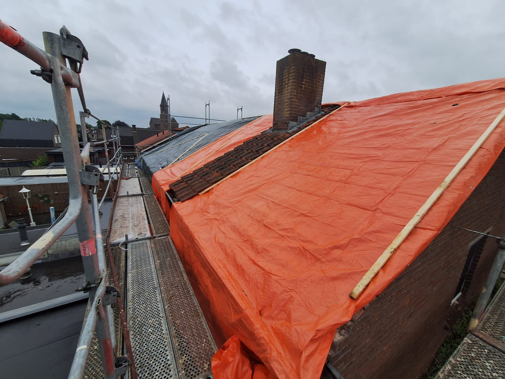
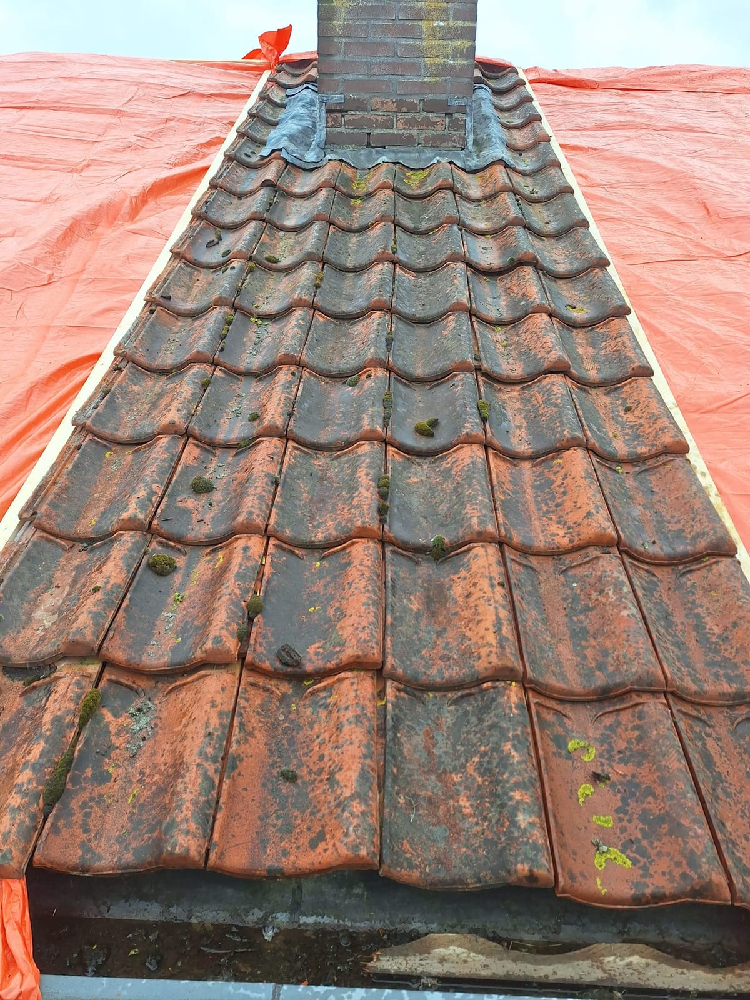

Lekkages
Wat we doen
Heb je last van een daklekkage? Schakel dan snel een dakdekker in, want hoe langer je wacht, hoe groter de schade wordt.
Neem contact met ons op en we komen langs om de situatie te beoordelen. Is het niet direct op te lossen, dan maken we een passende offerte voor je.

Herkenbaar?
- Vochtplekken op het plafond
- Druppels of plassen na een bui
- Lekkage rond de schoorsteen
- Water bij de dakkapel of het dakraam
Een lekkage gaat niet vanzelf over. Hoe langer je wacht, hoe groter de schade.
Werkwijze
Zo gaan we te werk
1. Lekkage melden
App of bel Nicky. Stuur gerust foto's mee van de vlek of de plek waar het lekt.
2. Oorzaak opsporen
Nicky zoekt waar het water echt binnenkomt. Dat is vaak ergens anders dan waar je de vlek ziet.
3. Advies en offerte
Kunnen we het direct oplossen, dan doen we dat. Zo niet, dan krijg je een passende offerte.
4. Blijvend herstel
We repareren de lekkage bij de bron, zodat je er niet opnieuw last van hebt.
